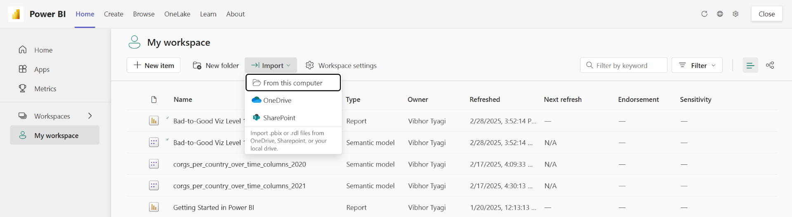

Bad-to-Good Viz Activity
Activity: Bad to Good Visualization Design
The purpose of this activity is to get some practice with implementing data visualization best practices in PowerBI.
NOTE: We may not have time to get to this in the workshop, but it is here as a reference if you want to do it on your own!
Instructions
You’ll start by downloading (and re-uploading to your own PowerBI workspace) one of the following PowerBI files which has a “bad” visualization in it. Each pbix file has instructions and information on the dataset and visualization:
- Bad-to-Good Viz Level 1 – Champaign Streetlights.pbix
- Bad-to-Good Viz Level 2 – Champaign Streetlights (but wait, there’s more!).pbix
- Bad-to-Good Viz Level 3 – Champaign Streetlights and Traffic Signs.pbix
Note that these increase in complexity – Level 1 will be the easiest to remake, and Level 3 will be the most complex (and likely require downloading and formatting the data on your own). Feel free to use whichever “Level” you feel the most comfortable with!
For this activity, you want to:
- Apply visualization best practices to update and improve the original visualization provided.
- Include some brief notes on decisions you made to update the visualization (you can reference the lecture notes if useful) – be ready to share out!
Tips & Tricks
Tip: You can upload .pbix files from “My Workspace” and then “Import” online: 